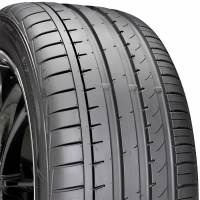
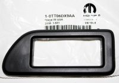
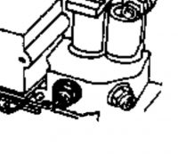

Falken Azenis FK453 Tire Set for Chrysler Plymouth Prowler - 295/40-20 225/45-17
$820.00
Price as of 2026-07-13 archive
Out of stock when archived
Contact to orderor email info@PartsRack.com · 360.837.3937
| Models | Prowler |
|---|---|
| Condition | Brand New |
| Category | Prowler, Tires |
Description
*FREE SHIPPING ON TIRES INSIDE CONTINENTAL US*
These Falken Azenis FK453 tires are designed for the world's finest automobiles, with high speed ratings up to 186 mph, low profile aspect ratios and rim diameters up to 24". These tires connect the car and suspension to the ground as well as complement modern electronic safety systems such as ABS brakes and active handling.
- Rayon Construction retains the tires profile during some of the most extreme driving conditions helping to improve high speed stability and handling.
- High Polymer Silica Compound designed and tested to meet the demands of European roads, the new high polymer based compound provides superior traction and grip for those seeking ultra high performance needs.
- Three Wide Circumferential Grooves effectively evacuate water and significantly improve hydroplaning resistance for outstanding wet handling.
- Asymmetric Tread Design with large outside shoulder blocks, provide enhanced cornering and better braking traction while reducing tire noise.
Traction: A
Temperature: A
Speed Rating: Z
Temperature: A
Speed Rating: Z
This is a FULL SET of brand new tires to fit stock Chrysler Plymouth Prowler wheels with 17" fronts and 20" rears.
Front size: 225/45ZR17XL 94Y
Rear size: 295/40R20XL 110W
Tires are in stock and should ship within two business days.
*FREE SHIPPING ON TIRES INSIDE CONTINENTAL US*
Archived 2026-06-06 · view original capture
More in Prowler

1992 - 1998 Viper Right Hand Door Handle Bezel - 0TT07DX9AA Dodge
Part # 0TT07DX9AA
$149.00

1992 - 1998 Viper Left Hand Door Handle Bezel - 0TT06DX9AA Dodge
Part # 0TT06DX9AA
$149.00

Prowler Transmission Input Speed Sensor - 4800878
Part # 4800878
$23.00

Prowler Transmission Output Speed Sensor - 4800879
Part # 4800879
$23.00